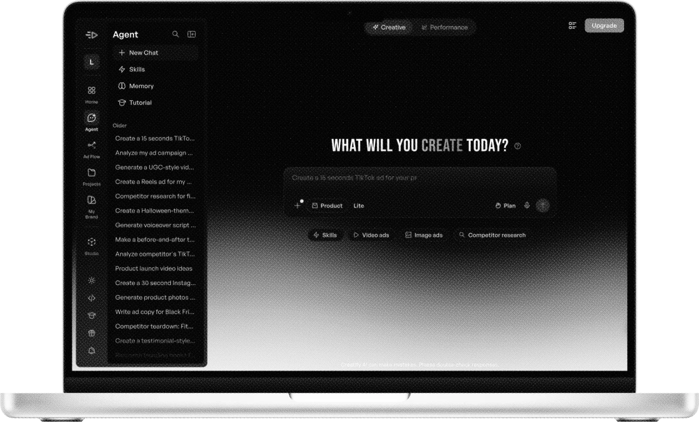
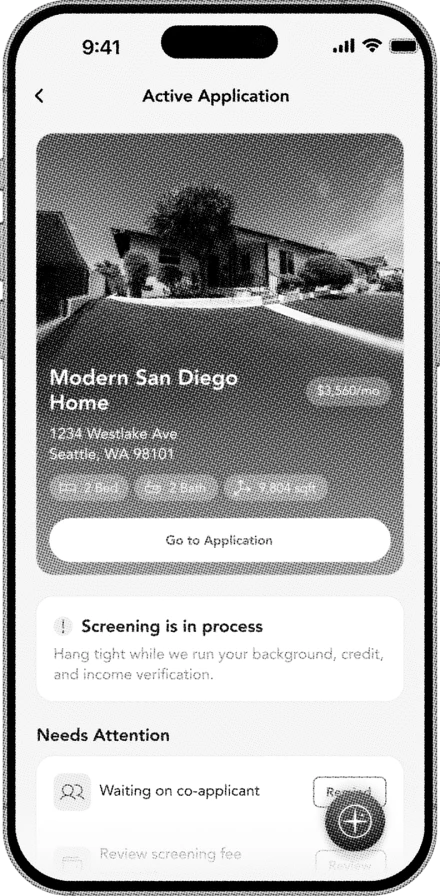
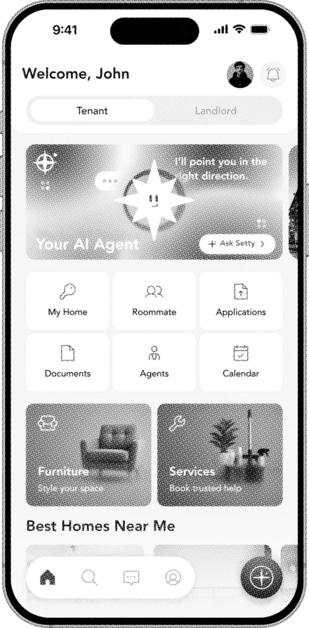
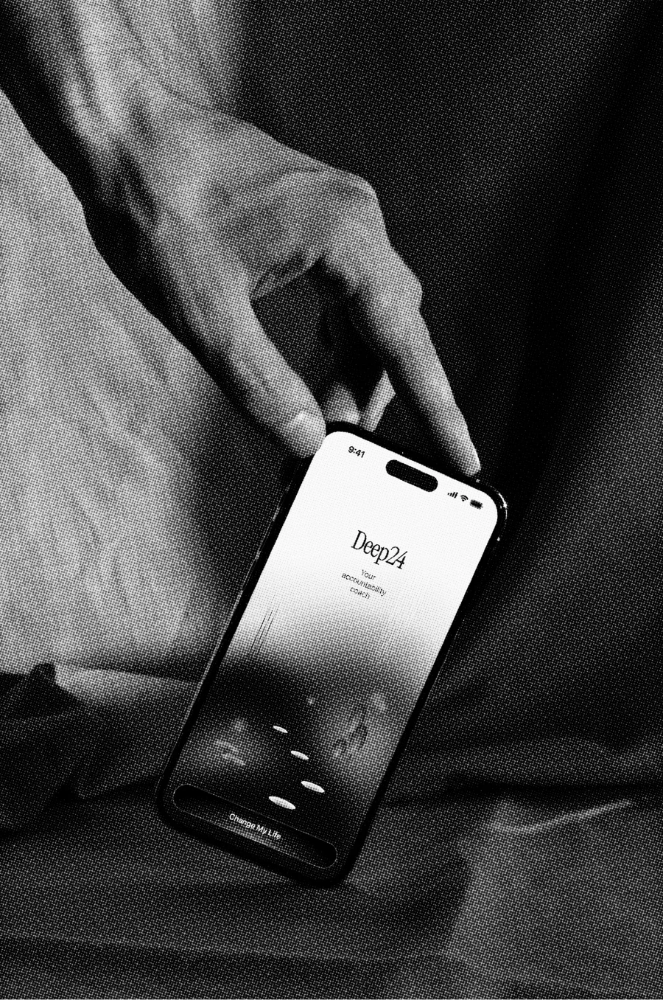

here dwell designs of all species.


Redesigning how users discover and
interact with Creatify’s AI Agent.

Designing a comprehensive AI-
powered rental experience for IOS.


Founding design for an IOS coaching
app, from onboarding to core flows.

Designing Penn’s anonymous
confession platform for honest
expression.
A hospital dashboard for tracking
post-discharge vitals.